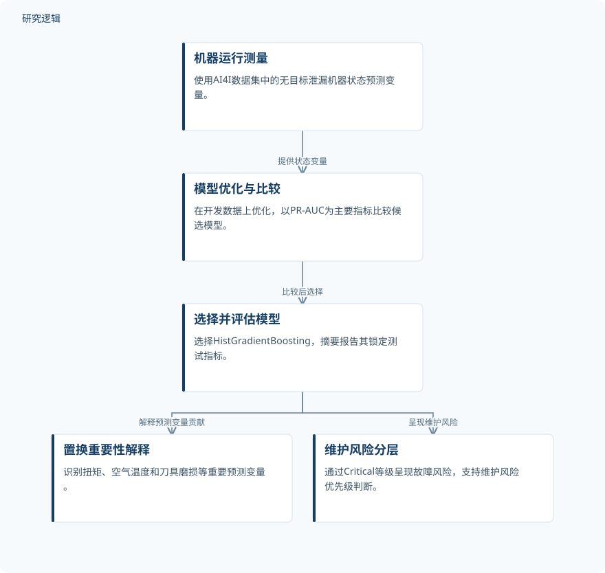

摘要解读
数字孪生驱动的智能制造预测性维护：融合机器学习实现智能机械系统优化
Digital Twin-Driven Predictive Maintenance in Smart Manufacturing: Integrating Machine Learning for Intelligent Mechanical System Optimization
解读更新 2026-10-30 10:08 · 依据公开摘要整理，未核验全文细节
设备意外停机会打乱生产与维护安排。本文尝试将运行测量转化为数字孪生维护中的虚拟状态层，结合可解释机器学习识别故障风险。阅读价值在于观察：模型预测如何连接维护优先级，而不把决策完全交给算法。
文章目录
从意外停机问题走向风险优先级
智能制造中的预测性维护不仅关乎故障识别，也关系到生产率、维护计划和资产利用。摘要将研究目标定位为利用运行测量支持维护决策，重点是建立数据驱动的虚拟状态层，而不是宣称已经完成整套数字孪生系统的现场部署。
用无泄漏状态变量比较预测模型
研究使用AI4I 2020 Predictive Maintenance数据集，选取6个不含目标泄漏的机器状态预测变量。作者以精确率—召回率曲线下面积（PR-AUC）为主要评价指标，比较Logistic Regression、Random Forest、Extra Trees和HistGradientBoosting。
摘要说明，模型在开发数据集上优化，并在独立验证数据集上测试，最终选择HistGradientBoosting。研究还使用置换重要性解释预测变量的贡献，并通过维护风险分层呈现结果，使预测能够服务于风险排序。
依据摘要整理的预测与风险呈现过程


仅概括摘要明确陈述的数据、模型比较、解释与风险分层关系，不代表论文原图或已验证的现场维护闭环。
下载 SVG图示关系说明
实线表示相邻阶段的信息流，虚线表示跨阶段联系或反馈。
机器运行测量 → 模型优化与比较：提供状态变量；模型优化与比较 → 选择并评估模型：比较后选择；选择并评估模型 → 置换重要性解释：解释预测变量贡献；选择并评估模型 → 维护风险分层：呈现维护风险
锁定测试表现与Critical风险层
所选HistGradientBoosting模型在锁定测试中的PR-AUC为0.8242，ROC-AUC为0.9750，平衡准确率为0.9031，故障召回率为0.8235。这些是摘要实际报告的预测指标，不能直接等同于停机时间减少或维护成本下降。
置换重要性识别出的最重要预测变量是扭矩、空气温度和刀具磨损。维护风险层将锁定测试中51个故障里的48个归入Critical等级。该分层结果与故障召回率属于不同表述，不能在缺少阈值说明时视为同一指标。
预测结果之外，哪些边界尚不明确
仅凭摘要，无法判断开发、验证与锁定测试各自的样本规模、划分方式及相互关系，也无法核对其他候选模型的具体表现。摘要未展开变量筛选和目标泄漏排查过程，因此不能进一步评价这些处理的充分性。
Critical等级覆盖了多少非故障观测、风险阈值如何设定，以及跨设备或真实生产环境的验证范围，摘要均未说明。它也未报告维护成本、停机时长或现场决策效果；这不意味着论文没有开展相关工作，而是当前资料不足以判断。
阅读启发：风险分层如何支持人工判断
阅读启发：继续阅读时，可重点关注虚拟状态层如何连接维护流程，以及Critical等级的划分依据。故障集中进入高风险层是否同时伴随较多误报，是理解其维护价值的重要问题；置换重要性则应作为模型解释线索，而非故障因果机制的证明。
以上为本站阅读启发与建议，不是论文已验证的结论。